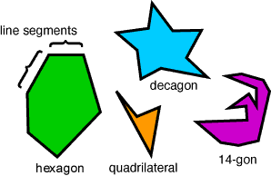
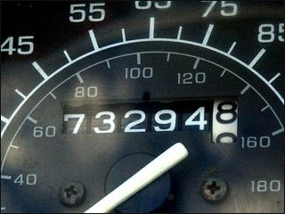

Posts
Ray casting algorithm in Python
[Category: Programming and Databases] [link] [Date: 2013-12-15 02:12:45]
It’s one of the simplest and most repeated operations in computational geometry: does a point fall within a polygon? Examples of this include assigning a point location to a state or county, potentially for filtering or to then gather information about the area the location falls within. A popular and simple method for solving this problem is the Ray Casting Algorithm which works by counting the number of intersections between a test line that contains the point in question and each edge of the polygon. If the number of intersections to the left of the test line and to the right of the test line are both odd, the point falls within the polygon.

Various polygons (Source: Oracle ThinkQuest)
As an exercise, I developed a solution to the point in polygon problem in Python. Most complicated is the test for two segments intersecting one another. I still barely understand the mathematics behind it, but the method I chose to use copy is done using vector cross products. See a thread on StackOverflow here for a detailed explanation of the methodology.
There are many special cases relating to where the point falls (exactly on an edge, exactly on the start or end point of an edge), how the test line is drawn (edge overlaps the test line), and the type of polygon (multi, self-intersecting). While the implementation I cobbled together below isn’t exhaustive, it’s functional for most cases.
def main():
poly = Polygon()
poly.AddPoint(Point(0,0))
poly.AddPoint(Point(2,0))
poly.AddPoint(Point(2,2))
poly.AddPoint(Point(0,2))
print(PointInPolygon(poly, Point(3,1)))
print(PointInPolygon(poly, Point(1,1)))
def PointInPolygon(polygon, point):
testline_left = Segment(Point(-999999999,point.y), point)
testline_right = Segment(point, Point(-999999999,point.y))
count_left = 0
count_right = 0
for e in polygon.GetEdges():
if EdgesIntersect(testline_left, e):
count_left += 1
if EdgesIntersect(testline_right, e):
count_right += 1
if count_left % 2 == 0 and count_right % 2 == 0:
return False
else:
return True
def EdgesIntersect(e1, e2):
a = e1.p1
b = e1.p2
c = e2.p1
d = e2.p2
cmp = Point(c.x - a.x, c.y - a.y)
r = Point(b.x - a.x, b.y - a.y)
s = Point(d.x - c.x, d.y - c.y)
cmpxr = cmp.x * r.y - cmp.y * r.x
cmpxs = cmp.x * s.y - cmp.y * s.x
rxs = r.x * s.y - r.y * s.x
if cmpxr == 0:
return (c.x - a.x < 0) != (c.x - b.x < 0)
if rxs == 0:
return False
rxsr = 1 / rxs
t = cmpxs * rxsr
u = cmpxr * rxsr
return t >= 0 and t <= 1 and u >= 0 and u <= 1
class Point:
x = None
y = None
def __init__(self, x, y):
self.x = x
self.y = y
class Segment:
p1 = None
p2 = None
def __init__(self, p1, p2):
self.p1 = p1
self.p2 = p2
class Polygon:
points = None
def __init__(self):
self.points = []
def AddPoint(self, p):
self.points.append(p)
def GetEdges(self):
edges = []
for i in range(len(self.points)):
if i == len(self.points) - 1:
i2 = 0
else:
i2 = i + 1
edges.append(Segment(self.points[i], self.points[i2]))
return edges
if __name__ == '__main__':
main()
The output of this Python script is seen below.
False True
For further reading, see:
I forget exactly how I came across this puzzler. It has been solved by deductive reasoning, brute force, and in a variety of programming languages. I felt compelled to develop my own solution in Python. The problem is as follows (taken from the Car Talk website).

Not a palindrome"I noticed that the last 4 digits were palindromic. I drove a mile, and the last 5 were palindromic. I drove another mile and the middle 4 were palindromic, and the ends were not involved. And then one mile later, all 6 digits were palindromic."
First, I wondered if leading zeroes on the odometer counted as eligible digits for comparison. As it would turn out, it makes no difference. My solution incorporated this regardless. Another interesting bit is that there are technically two solutions that satisfy the conditions outlined by the author, though the second solution is much less elegant and for the first number in the sequence the first five digits are palindromic. After refreshing my memory regarding splice syntax in Python, I was on my way. Running the following code produces two results: 198,888 and 199,999.
import math
def ispalindrome(text):
plen = math.floor(len(text) / 2) + 1
if text[:plen-1] == text[:-plen:-1]:
return True
else:
return False
for i in range(100000, 1000000):
reading = str(i).zfill(6)
if len(reading) == 6:
condition_1 = str(i).zfill(6)[2:]
condition_2 = str(i+1).zfill(6)[1:]
condition_3 = str(i+2).zfill(6)[1:5]
condition_4 = str(i+3).zfill(6)
if ispalindrome(condition_1) \
and ispalindrome(condition_2) \
and ispalindrome(condition_3) \
and ispalindrome(condition_4):
print("Odometer initially read: " + str(i))
For the more elegant answer of 198888, the sequence is 198888 -> 198889 -> 198890 -> 198891. The less elegant answer of 199999 yields a sequence of 199999 -> 200000 -> 200001 -> 200002. In all likelihood, the author was referencing the first solution of 198,888 or else he would have specified that the last five digits were palindromic to start the sequence. There is also a sense of "less palindromic" when dealing with numbers that are mostly identical to take into account.
After watching a video by Numpherphile with Dr. James Grime illustrating an interesting relationship of Fibonacci numbers and their remainders known as a Pisano Period, I decided to explore a bit on my own and write a solver in Python.
 Do these Pigeons know the secret?
Do these Pigeons know the secret?In a Fibonacci series, the current number in the series is the sum of the previous two numbers. If a divisor is chosen, each number in the series is divided by the divisor, and the remainder is taken, interesting patterns emerge. For each divisor (ex: 3, 5, 7, 10, 11) a repeating pattern of varying length is found. For a divisor of 3, a pattern with length 8 repeats. For 7, a pattern of length 16. Each pattern always initiates with a 0 first followed by a 1.
My implementation to illustrate these unique patterns is found below.
def main():
fibonacci_length = 40
divisor = 11
series = generateFibonnaci(fibonacci_length)
remainder = [num % divisor for num in series]
pattern = findPattern(remainder)
period = len(pattern)
print(series)
print(remainder)
print(pattern)
print(period)
def generateFibonnaci(size):
result = [0,1]
for i in range(size - 2):
result.append(result[i]+result[i+1])
return result
def findPattern(series):
length = 0
for i in range(2, int(len(series)/2)):
if series[0:i] == series[i:2*i] :
return series[0:i]
return []
if __name__ == '__main__':
main()
For the above example, the following is returned (series shortened):
[0, 1, 1, 2, 3, 5, 8, 13, 21, 34, 55, 89, 144, 233, 377, 610, 987, 1597, ...] [0, 1, 1, 2, 3, 5, 8, 2, 10, 1, 0, 1, 1, 2, 3, 5, 8, 2, 10, 1, 0, 1, ...] [0, 1, 1, 2, 3, 5, 8, 2, 10, 1] 10
For larger divisors, larger Fibonacci sequences may be necessary. Be careful if you decide to be ambitious - you can easily push your laptop into submission.
So why is this amusing? No one has come up with a deterministic way to predict the length of the pattern (known as the Pisano Period). For more crazy relationships using Fibonacci numbers and the Pisano Periods watch the Numberphile video on YouTube or read the WikiPedia article on Pisano Periods.